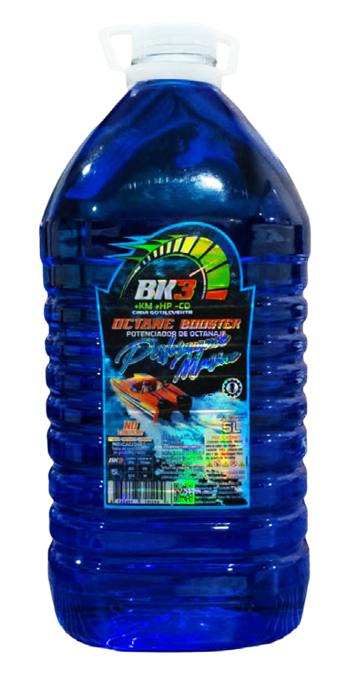

CONOCE MÁS SOBRE
LOS 7 BENEFICIOS
1.
Más kilómetros
2.
Más HP
3.
Menos contaminación
4.
Limpiamos todo el sistema de inyección y combustión
5.
Disociar la molécula del agua
6.
Pulverizar el azufre
7.
Lubricar todo el sistema
Utiliza el equivalente al 2.5% de BK3 Performance Marine según el contenido del tanque de gasolina de la embarcación.
Ideal para motores fueraborda, intraborda y embarcaciones recreacionales o de competencia.